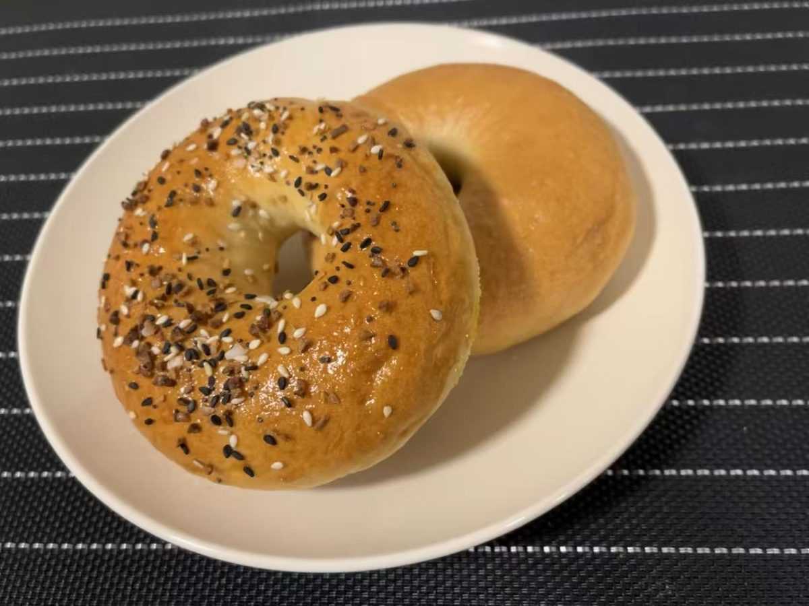

A rabbit, a snake, and one bagel argument that got a little out of hand.
Bunny & Snake comes from the Chinese zodiac. Bunny was born in the Year of the Rabbit, and her husband, Snake, in the Year of the Snake.
Bunny’s very first bake was a bagel. Back in Seattle, a bagel shop with one location downtown and another in University Village made the best bagels around. Its name has slipped away, but those bagels set the standard.
Snake and Bunny learned from very different teachers, and each was sure their way was better. A few words were exchanged. To settle it, each baked a batch.
Loose, rough-and-ready videos from guys who toss the dough around. Roll a ball, push a thumb through the middle, and stretch it open.
The tidier method, and the one you see most these days, since social media loves a pretty bagel. Roll the dough into a rope, wrap it into a ring, and seal the ends.
A little more research settled it: both are real, time-tested ways to shape a bagel. Snake’s “messy” method has a proper name, and Bunny’s neat one is a classic too. Nobody lost.

Bagels led to loaves, and loaves led to all kinds of bread. Before long came the idea of selling some, and milk bread quickly became the customer favorite.
Bread comes easily now. Sourdough still flops now and then, but not often. The recipes that earn their place end up here, tested and adjusted along the way.